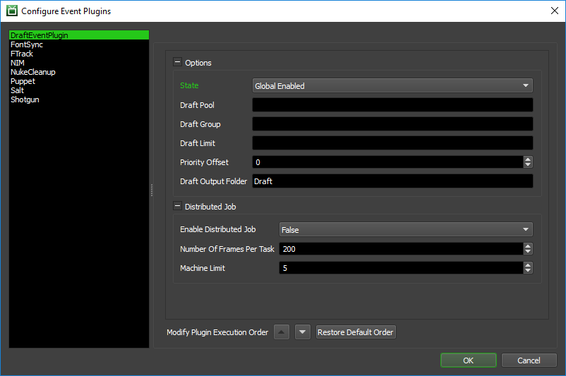
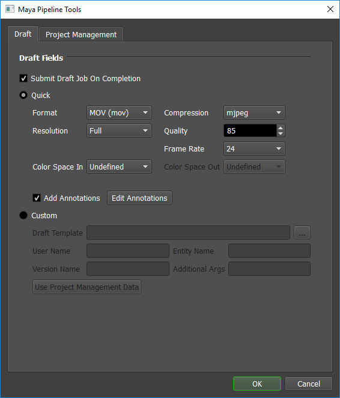
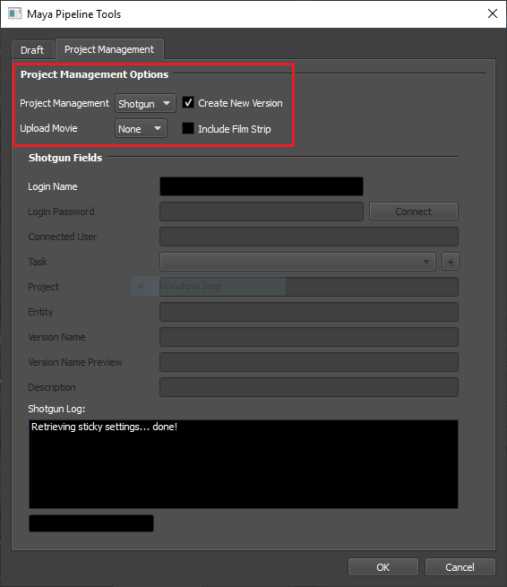

Pipeline Tools¶
Overview¶
The Pipeline Tools window is included in each integrated submitter to allow access to Deadline’s supported event plugins (Draft, Shotgun, FTrack, and NIM). This window can be opened by clicking the Pipeline Tools button at the bottom of any installed integrated submitter - see the Integrated Submitter Installation (Quick) documentation for more information. Beside the Pipeline Tools button is a status message indicating which pipeline tool settings the user has set for the current scene.

Enable/Disable Event Plugins¶
The different event plugins that can be displayed changes depending on your repository settings. These event plugins can be enabled/disabled globally or on an opt-in basis. To do this, enter Power User Mode from the Tools menu in the Monitor and then select Tools -> Configure Events.
Once this window has opened select one of the supported Pipeline Tools event plugins from the list on the left (either Draft, Shotgun, FTrack, or NIM). The plugin state can be changed via the State dropdown box. There are three different states that an Event Plugin can be in: Global Enabled, Opt-In, and Disabled. In order for the selected plugin to function properly, the State must be set to either Global Enabled or Opt-In. Note that if this plugin is in the Opt-In state, the jobs that want to run this plugin must opt into it.
After setting the state, the Pipeline Tools window will change which plugins are displayed the next time the window is opened.
Draft (Quick/Custom)¶
Draft / Quick Draft is a tool that provides simple and lightweight compositing and video processing functionality, designed to automate typical post-render tasks. It is implemented as a Python library (works across all platforms), which exposes functionality for use in Python scripts (which are referred to as Draft Templates). Draft is designed to be tightly integrated with Deadline, but it can also be used as a standalone tool.
The Pipeline Tools window allows the creation of both Quick Draft and Custom Draft jobs. For more information about the options listed under each section please refer to the Quick Draft Options and Custom Draft Options documentation.
Project Management Options¶
The other three event plugins can be found under the Project Management tab.
Here there are a few options that can be specified:
Project Management: Selects the type of project management to be used (Shotgun, FTrack, or NIM).
Create New Version: If enabled, Deadline will connect to Shotgun/FTrack/NIM, to create a new version and upload a thumbnail for this job.
- Upload Movie: Selects what type of movie gets uploaded to project management (None, Simple, Draft).
None: No movie is uploaded.
Simple: If selected, a Draft job will be created to upload a simple movie using DraftCreateSimpleMovie.py located in the DraftEventPlugin folder.
Draft: If selected, the dependent Draft job will upload the resulting Quick Draft or Custom Draft movie.
Include Film Strip: Shotgun Only. If enabled, a Draft job will be created to upload a film strip using DraftCreateFilmstrip.py located in the DraftEventPlugin folder.
Shotgun¶
Shotgun is a customizable web-based Production Tracking system for digital studios, and is developed by Shotgun Software.

More information about how to set up a Shotgun connection (and the options listed with it) can be found in the Shotgun documentation.
FTrack¶
FTrack is a cloud-based Project Management tool that provides Production Tracking, Asset Management, and Team Collaboration tools to digital studios; see the FTrack website for more information.

More information about how to set up an FTrack connection (and the options listed with it) can be found in the FTrack documentation.
NIM¶
NIM is a browser based management tool created by artists for artists to track the post-production pipeline from start to finish. See the NIM website for more information.

More information about how to set up a NIM connection (and the options listed with it) can be found in the NIM documentation.

{kind=link}
{kind=link}
{kind=link}